Aplicaciones
Barra de herramientas
La barra de herramientas de Visual Studio Community es una interfaz que contiene varios botones y opciones rápidas para realizar tareas comunes durante el desarrollo de software. Por lo general, incluye:
- Archivo: Para crear, abrir, guardar o cerrar proyectos y soluciones.
- Edición: Herramientas para deshacer, rehacer, copiar, pegar, buscar y reemplazar.
- Ver: Controla las ventanas y paneles del IDE, como el Explorador de soluciones y la Terminal.
- Git: Opciones para gestionar el control de versiones con Git, como hacer commit, push, pull y ver el historial de cambios.
- Proyecto: Opciones para gestionar la configuración y las propiedades del proyecto.
- Compilar: Opciones para compilar y construir tu proyecto, asegurando que el código sea transformado en un ejecutable o librería.
- Depuración: Herramientas para iniciar, detener y depurar el código..
- Prueba: Herramientas para ejecutar pruebas unitarias, gestionar los resultados de las pruebas y asegurar que tu código funciona correctamente.
- Analizar: Opciones para analizar el rendimiento del código, el uso de memoria y otras métricas que pueden ayudar a mejorar la calidad y eficiencia.
- Herramientas: Configuraciones y extensiones para personalizar el entorno de desarrollo.
- Extensiones: Para gestionar y agregar extensiones y complementos que amplían las funcionalidades de Visual Studio.
- Ventana: Permite gestionar las ventanas abiertas dentro del IDE, como mover, organizar o cambiar entre ellas.
- Ayuda: Acceso a la documentación, recursos y soporte
Archivo
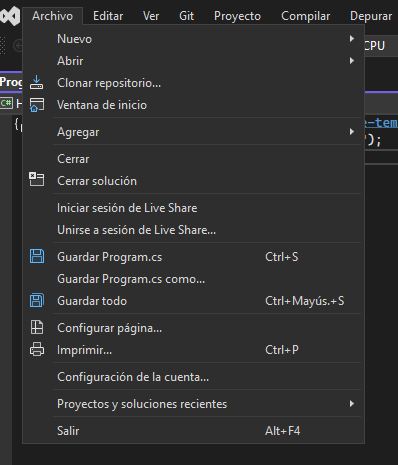- Nuevo: Crear proyectos, soluciones y archivos nuevos.
- Abrir: Abrir proyectos, soluciones o archivos existentes
- Clonar repositorio: Descargar una copia local de un proyecto hospedado en plataformas como GitHub
- Ventana de inicio: Es la pantalla principal o interfaz que aparece al abrir una aplicación
- Guardar: Guardar cambios en proyectos y archivos
- Cerrar: Cerrar archivoso proyectos abiertos
- Salir: Cerrar visual Studio
Editar
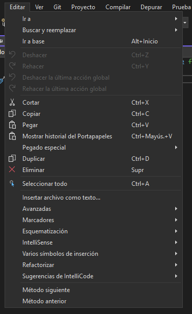- Deshacer/Rehacer: Deshacer o rehacer cambios en el código.
- Buscar y reemplazar: Buscar palabras o fragmentos de código y reemplazarlos.
- Copiar/pegar: Copiar y pegar código entre archvios o secciones.
- Ir a línea/símbolo: Navegar rápidamente a una línea específica o símbolo en el código
Ver
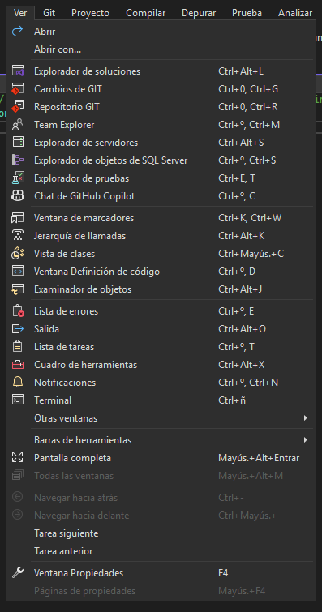- Explorador de soluciones:
- Cambios de GIT:
- Repositorio GIT:
- Team Explorer:
- Explorador de servidores:
- Explorador de objetos de SQL Server:
- Explorador de pruebas:
- Chat de GitHub Copilot:
- Ventana de marcadores:
- Jerarquía de llamadas:
- Vista de clases:
- Ventana Definición de código:
- Examinador de objetos:
- Lista de errores:
- Salida:
- Lista de tareas:
- Cuadro de herramientas:
- Notificaciones:
- Terminal:
- Otras ventanas:
Git
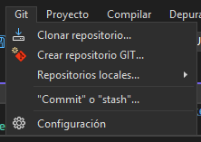- Clonar repositorio: Descargar una copia local de un proyecto hospedado en plataformas como GitHub
- Crear repositorio GIT: Nos permite crear un repositorio
- Repositorios locales: podemos ver los repositorios locales que tenemos clonados en nuestro sistema
- Configuración: Nos permite acceder a la configuración de nuestra página
- Commit: Hacer un commit de los cambios realizados al repositorio.
Proyectos
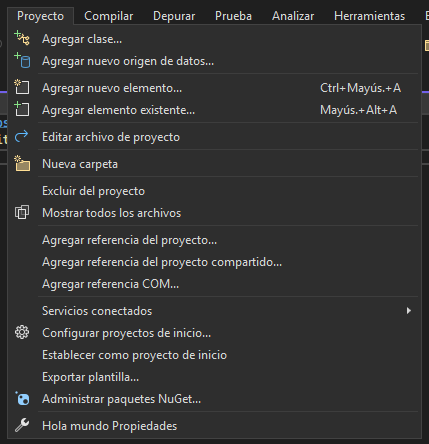- Agregar clase: Nos permite agregar una clase nueva a nuestro proyecto
- Agregar nuevo origen de datos:
- Agregar nuevo elemento:
- Editar archivo de proyecto: Nos permite editar uno de los elementos del proyecto
- Nueva carpeta: Nos permite agregar un nuevo fichero a nuestro proyecto
- Excluir del proyecto: Nos permite aislar un fichero que estamos usando actualmente es nuestro proyecto
- Mostrar todos los archivos: Nos muestra todos los arhcivos de nuestro proyecto
- Agregar referencia del proyecto: Significa incluir un enlace o vínculo a otro proyecto, biblioteca o archivo dentro de un entorno de desarrollo de software
- Agregar referencia del proyecto compartido: Significa vincular un proyecto común o reutilizable a otro proyecto dentro de una solución o entorno de desarrollo.
- Agregar referencia COM: Es el proceso de vincular un componente COM (Component Object Model) a un proyecto para utilizar sus funcionalidades desde el código.
- Servicios conectados: Te permite todos los servicios que tienes abiertos
- Configurar proyectos de inicio: Es el proceso de seleccionar uno o más proyectos dentro de una solución para que se ejecuten automáticamente al iniciar la depuración en un entorno de desarrollo, como Visual Studio.
- Establecer como proyecto de inicio: Seleccionar un proyecto para que se ejecute primero al iniciar la depuración.
- Establecer como proyecto de inicio: Opción para definir un proyecto específico que se ejecutará al iniciar la solución.
- Exportar plantilla: Opción para ugardar la configuración y estructura de un proyecto como una plantilla reutilizable
- Administrar paquetes NuGet: Opción para instalar, actualizar o eliminar paquetes NuGet en un proyecto.
- Propiedades: Opción para ver y modificar los atributos del proyecto , archivos o elementos seleccionados
Compilar
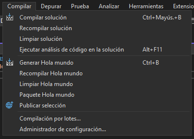- Compilar solución: Esto te permite contruir todos los proyectos d ela oslución, generando los arhciov sejecutables y dependencias necesarias.
- Recompilar solución: Compila los proyectos de la solución desde cero, sin reutilizar compilaciones preivas
- Limpiar solución: Esto nos permite eliminar archivos de compilación generados, dejando la solución en un estado limpio.
- Ejecutar análisis de código en la solución: Opción para analizar el código de toda la solución en busca de errores, advertencias y mejoras recomendadas.
- Compilación por lotes: Opción para compilar varios proyectos de la solución de manera selectiva y simultánea
Depurar
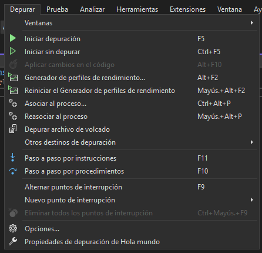- Ventanas: permite administrar la disposición de las vnetanasd del entorno , incluyendo su organización , anclaje y restauración
- Generador de perfiles de rendimiento: Herramienta para analizar el rendimiento de uan aplicación, identificando cuellosd e botella y optimizando el código
- Asociar al proceso: Esta opción nos permite vincular el proyecto en ejecuión con un proceso específico del sistemapara depuración o análisis
- Depurar archivos de volcado: Opción para analizar y depurar archvios de volcado de memoria generados durante fallos o excepciones en la aplicación
- Paso a paso por instruccion: Modo de depuración quepermite ejecutar el código línea por línea, deteniéndose en cada instrucción para inspeccionar el flujo y los valores de las variables
- Paso a paso por procedimiento: Modo de depuración que permite ejecutar el código procedimiento por procedimiento , deteniéndose al entrar o salir de cada función o métodos
- Alternar puntos de interrupción: Opcion par aactivar o desactivar puntos de interrupción en el codigo, lo qeu permite detener la ejecución en ubicaciones específicar para depurar
Prueba
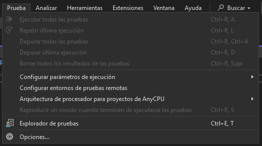- Ejecutar Pruebas: Ejecutar pruebas unitarias para verificar que el código funciona correctamente.
- Arquitectura de procesador para proyectos de AnyCPU: Configuración que permite compilar un proyecto apra que se ejecute en cualuier arquitectura de procesador según el sistema operativo del sistema
- Explorador de pruebas: Que permite gestionar, ejecutar y ver los resultados de las pruebas unitarias en un proyecto
Analizar
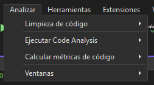- Limpieza de código: Esta opción nos permite refactorizar el codigo elimando errores, mejorando la legibilidad y siguiendo las mejores prácticas de estilo y estructura
- Ejecutar Code Analysis: esto nos permite analizar el codigo en busca de errores, advertiendo y sugiriendo alguna optimización según reglas predefinidas
- Calcular métricas de codigo: Analizar el codigo para generar métricas como complejidad, cobertura de pruebas y cantidad de líneas, ayudando a evaluar la cantidad del código
Herramientas
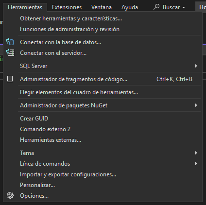- Obtener herramientas y características: Opción para añadir o quitar herramientas y características del entorno de desarrollo.
- Funciones de administración y revisión: Herramientas para gestionar y revisar el código, como control de versiones o análisis de calidad.
- Conectar con la base de datos: Opción para establecer una conexión con una base de datos para interactuar con los datos directamente desde Visual Studio.
- Conectar con el servidor: Herramienta para establecer conexión con un servidor, permitiendo gestionar aplicaciones y recursos remotos.
- SQL Server: Herramienta integrada para interactuar, administrar y depurar bases de datos SQL Server.
- Administrador de fragmentos de códigos: Herramienta para gestionar y reutilizar fragmentos de código predefinidos en proyectos.
- Elegir elementos de cuadro de herramientas: Opción para seleccionar y añadir controles y elementos a la interfaz gráfica de un proyecto.
- Administrador de paquetes NuGet: Opción para instalar, actualizar o eliminar paquetes NuGet en un proyecto.
- Crear GUID: Herramienta para generar identificadores globalmente únicos (GUID) para proyectos o recursos.
- Comando externo 2: Opción para ejecutar comandos externos personalizados desde el entorno de Visual Studio.
- Herramientas externas: Opción para integrar y gestionar herramientas de terceros dentro de Visual Studio.
- Línea de comandos: Herramienta para ejecutar comandos directamente desde la línea de comandos dentro del entorno de Visual Studio.
- Importar y exportar configuración: Opción para importar o exportar la configuración personalizada de Visual Studio.
Extensiones
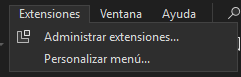- Administrar extensiones: Opción para instalar, desinstalar o configurar extensiones y complementos que amplían las funcionalidades de Visual Studio.
- Personalizar menú: Herramienta para modificar y personalizar la disposición y opciones de los menús dentro de Visual Studio.
Ventana
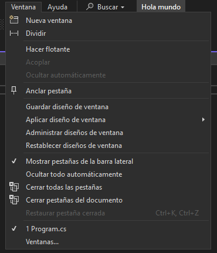- Nueva ventana: Opción para abrir una nueva ventana dentro de Visual Studio para trabajar con múltiples vistas.
- Dividir: Herramienta para dividir la ventana activa en dos paneles, permitiendo ver diferentes áreas del código o interfaz al mismo tiempo.
- Hacer flotante: Opción para hacer que una ventana se desprenda del entorno principal y flote de forma independiente.
- Anclar pestaña: Herramienta para fijar una pestaña de ventana, asegurando que permanezca visible y accesible.
- Guardar diseño de ventana: Opción para guardar la disposición actual de las ventanas y pestañas para restaurarla más tarde.
- Aplicar diseño de ventana: Opción para aplicar un diseño de ventana previamente guardado o preconfigurado.
- Administrar diseños de ventana: Herramienta para gestionar y organizar los diseños de ventana guardados, permitiendo crear, modificar o eliminar diseños.
- Restablecer diseños de ventana: Opción para restablecer la disposición de las ventanas y pestañas al diseño predeterminado de Visual Studio.
Ayuda
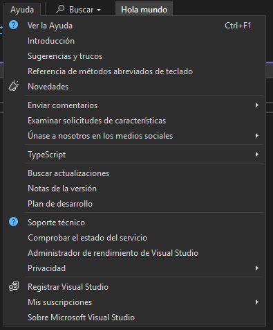- Ver la ayuda: Opción para acceder a la documentación y recursos de ayuda de Visual Studio.
- Sugerencia y trucos: Sección que proporciona consejos útiles y técnicas para mejorar la productividad y el uso de Visual Studio.
- Referencia de métodos abreviados de teclado: Opción para consultar una lista de atajos de teclado disponibles en Visual Studio para acelerar la navegación y las tareas.
- Novedades: Opción para conocer las últimas características, actualizaciones y mejoras de Visual Studio.